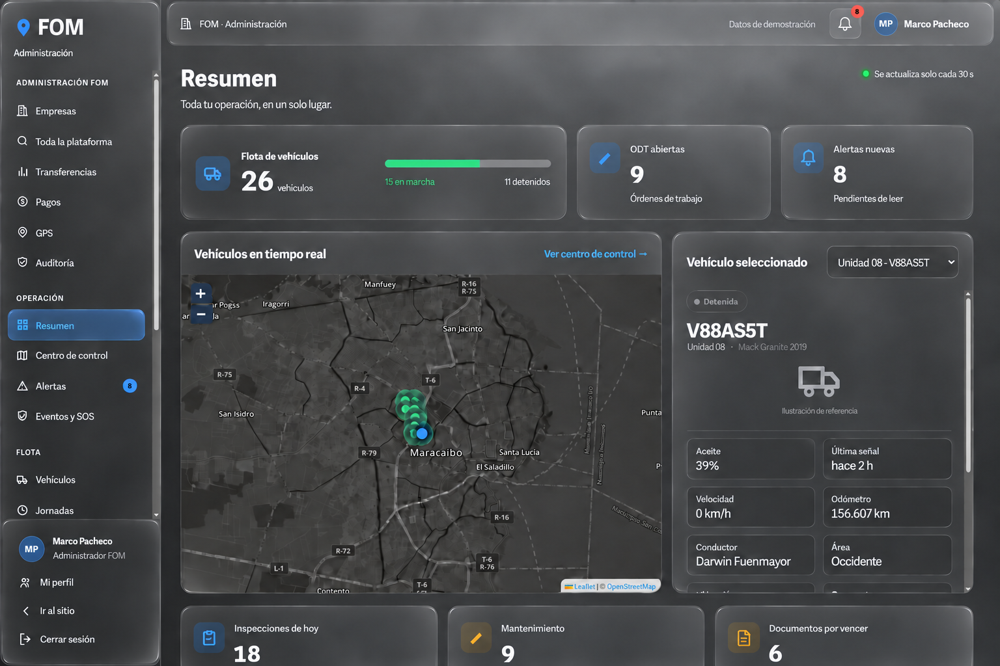
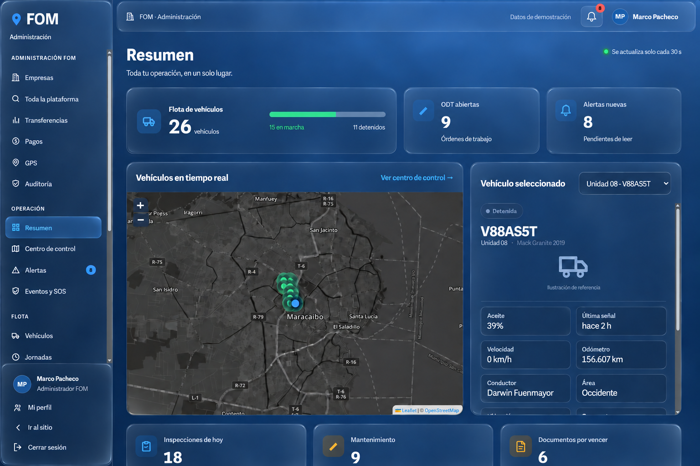
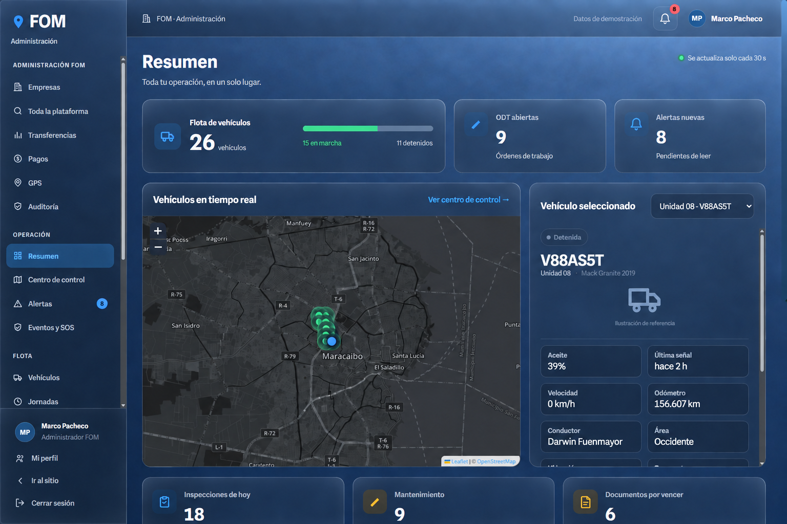
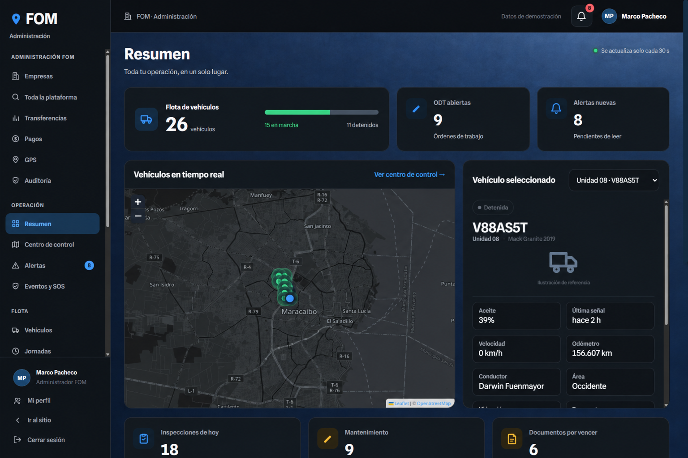
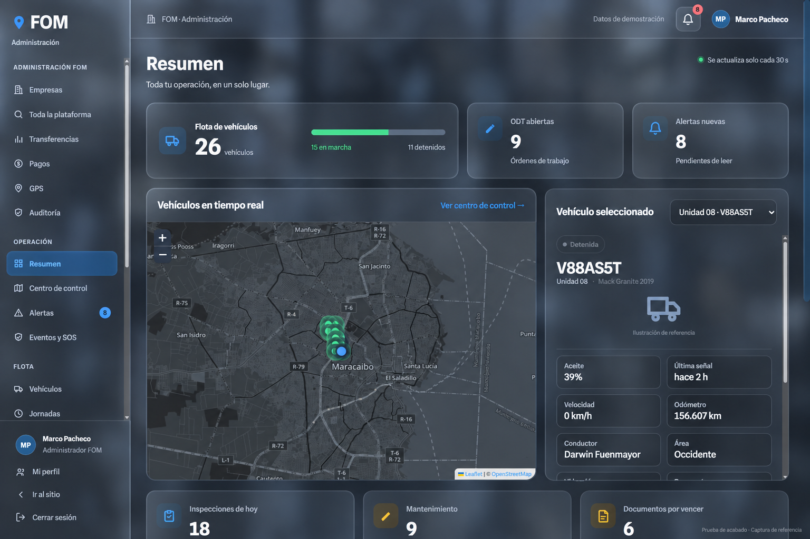

Mismo diseño, gris de la referencia
Última prueba: tarjetas gris carbón, fondo gris más claro, campana circular y perfil en cápsula. Se conservan las esquinas redondeadas y el menú izquierdo separado del borde. Estas imágenes todavía no están aplicadas al panel.
Resumen · cristal sobre fondo gris
Última versión: fondo gris ahumado, superficies transparentes y azul FOM en los controles.

Resumen · cristal inspirado en Apple
Última versión: transparencia y reflejos suaves, manteniendo la distribución de la captura de referencia.

Resumen · más glass y más transparente
Versión más reciente. Superficies de fondo translúcidas sobre la textura azul proporcionada.

Resumen · fondo azul proporcionado
Última propuesta: efecto únicamente en el fondo. Prueba sobre una captura guardada.

Resumen
Prueba sobre una captura guardada; las cifras y la navegación corresponden a esa referencia.

Las demás vistas están pendientes de capturas actuales: la sesión del panel aparece vencida. No se han cambiado los componentes, estilos ni funciones de la web.